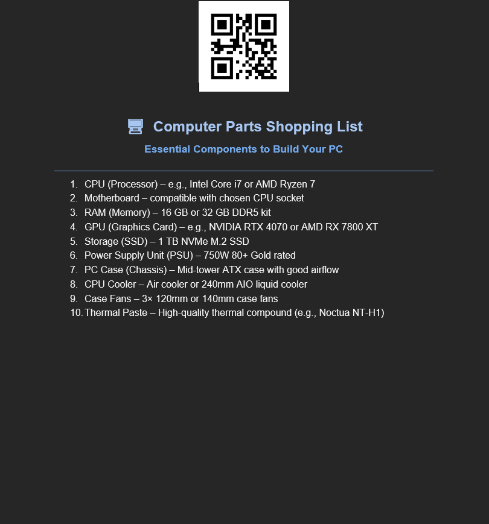

The most important thing I have taken away from this module is that every component of a computer serves an individual function and they must all be able to communicate with each other in order for the machine to operate effectively. An example of how this works in practice would be as follows: The CPU acts as the "brain," RAM enables the computer to perform operations faster, and hard drives save your documents/software. Understanding the function of each component allows users to make better decisions regarding purchasing, enhancing/upgrading, or repairing their computer systems. Furthermore, understanding the functions of each component will help users understand why compatibility among components is so crucial to ensure the successful operation of a computer system.